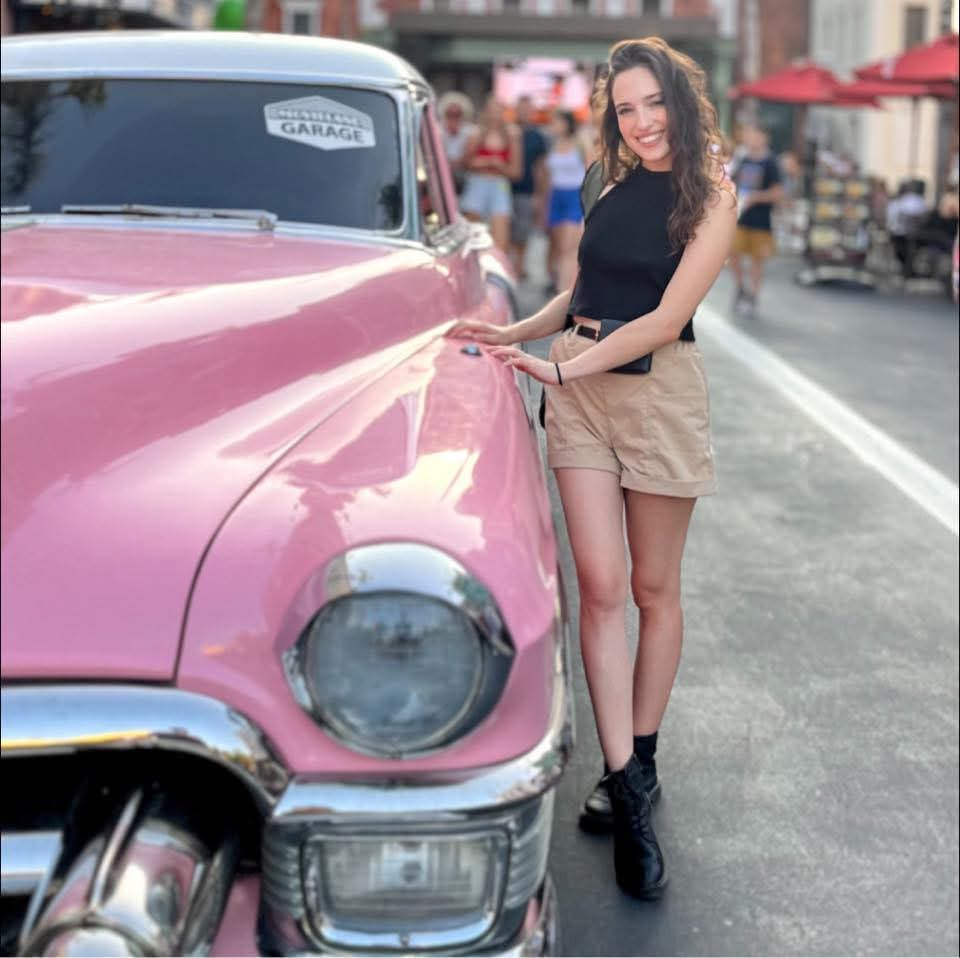

Una community vera
Petite Mood nasce per mettere in contatto ragazze che vivono le stesse esperienze e vogliono sentirsi comprese.
Petite Mood nasce per ascoltare, ispirare e costruire insieme alle ragazze petite il primo brand creato davvero partendo dalla community.

Vogliamo creare un luogo dove ogni ragazza petite possa sentirsi ascoltata, rappresentata e finalmente al centro del progetto.
Petite Mood nasce per mettere in contatto ragazze che vivono le stesse esperienze e vogliono sentirsi comprese.
Prima di creare una collezione vogliamo capire cosa serve davvero alle ragazze sotto i 160 cm.
Ogni consiglio, ogni messaggio e ogni questionario compilato ci aiuterà a costruire Petite Mood.
Non vogliamo creare semplicemente un marchio di abbigliamento. Vogliamo costruire una community che partecipi alla nascita di ogni futura collezione.
Ogni esperienza è importante. Per questo il questionario sarà il punto di partenza del progetto.
Condivideremo outfit, consigli e idee pensate per valorizzare ogni ragazza petite.
Petite Mood crescerà un passo alla volta, insieme alla sua community.
Petite Mood è appena iniziata, ma ogni persona che entra nella community rende questo progetto sempre più reale.
Follower Instagram
Questionari compilati
Petite Members
Sogni da realizzare

Petite Mood è nata quasi per gioco. Un giorno abbiamo iniziato a parlare delle difficoltà che tante ragazze sotto i 160 cm incontrano ogni volta che cercano un paio di jeans, un pantalone o un vestito.
Federica ha iniziato a raccontare queste situazioni sui social e, video dopo video, sono arrivati tantissimi messaggi. In quel momento abbiamo capito una cosa: non eravamo gli unici ad accorgerci di questo problema.
Così abbiamo deciso di costruire qualcosa di diverso. Non partire da un prodotto. Ma partire dalle persone.
Oggi Petite Mood è prima di tutto una community. Vogliamo ascoltare, imparare e crescere insieme a voi. E speriamo che un giorno possiate dire: "Io c'ero fin dall'inizio."
Prima di creare la nostra prima collezione vogliamo conoscere davvero le esigenze delle ragazze sotto i 160 cm. Bastano meno di 3 minuti e il tuo contributo sarà prezioso.
Ogni settimana condividiamo consigli, outfit, curiosità e momenti della nostra crescita.